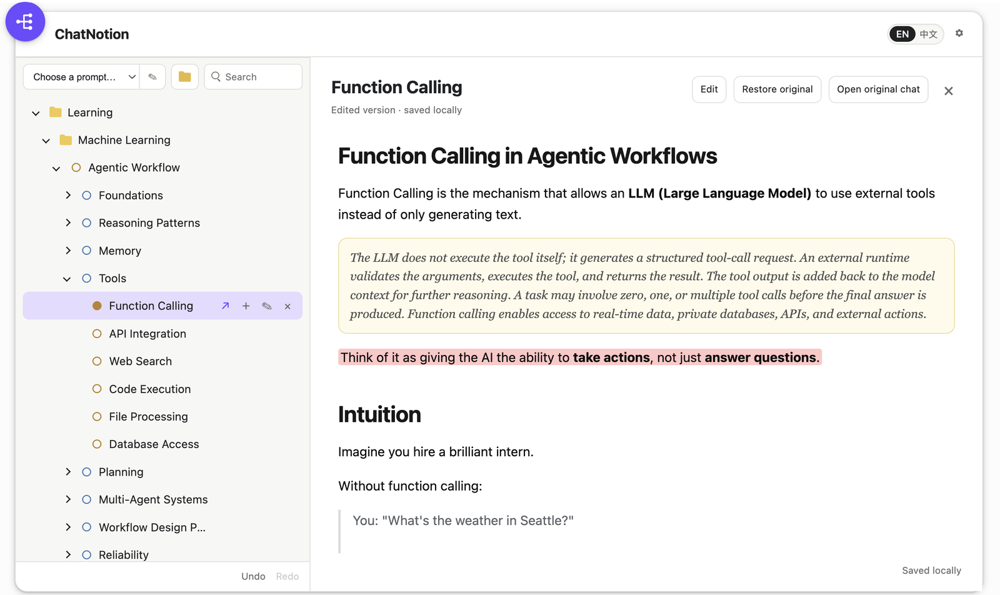

ChatGPT is where you think. ChatNotion is where you keep it. 在 ChatGPT 里思考，在 ChatNotion 里留存。
Organize every ChatGPT chat into one nested workspace, turn any answer into an explorable knowledge tree, and edit it down into notes that are yours — no account, no backend, right inside ChatGPT.
把每一段 ChatGPT 对话收进一个可自由嵌套的工作台，把任何回答展开成可探索的知识树， 再删减成属于你自己的笔记——无需账号、无需后端，直接在 ChatGPT 中运行。
A short narrated walkthrough — from a scattered ChatGPT history to an organized, explorable workspace of trees and notes. 一段带解说的简短演示——从杂乱的 ChatGPT 历史，到井然有序、可探索的知识树与笔记工作台。
The answers pile up. The structure never does. 答案越攒越多，结构却始终没有。
Learning a field or researching a topic rarely fits into one conversation. As questions multiply, useful context gets buried in chat history — and the ChatGPT sidebar becomes a flat, endless list. 学习一个领域或研究一个课题，往往无法在一段对话里完成。随着问题不断增加，有用的上下文被埋进聊天记录，而 ChatGPT 侧边栏也变成一长串扁平、看不到头的列表。
Related chats live in one long sidebar with no structure, and the right one is always hard to find again.相关的对话都堆在同一条长长的侧边栏里，毫无结构，想再找到那一段总是很费劲。
You paste links into Notion or notes, but then structure and conversations live apart — and keeping them in sync becomes its own chore.你把链接粘到 Notion 或笔记里，结构和对话却分了家——维护这套系统本身又成了一件麻烦事。
Each chat forgets how it connects to the bigger topic that gave it meaning, so you re-explain the same background again and again.每段对话都记不得自己与更大主题的关联，于是你只能一遍又一遍地重新交代同样的背景。
Ask big. Branch as you go. 大胆发问，边走边分支。
Turn Tree mode on before you ask, and ChatGPT organizes its answer into a clean hierarchy. Then one Generate tree button on the finished answer extracts it into an expandable knowledge tree — locally, at whatever depth you choose. 提问前先打开树模式，ChatGPT 会把回答组织成清晰的层级结构。然后在完成的回答下点一下 Generate tree，就能在本地按你选择的深度，把它抽取成一棵可展开的知识树。
Each node opens as a focused conversation with concise parent context — never a silent auto-submit.每个节点都能作为专注对话打开，附带精简的上级上下文——绝不会静默替你发送。
Expand one branch, skip to another, reorganize, and return to any node later.展开一个分支、跳到另一个、重新整理，随时回到之前的节点。
Built from the answer's own headings and lists, with a configurable depth of 1–5.基于回答自身的标题和列表结构生成，抽取深度可在 1–5 之间调整。
AI writes the first draft. You keep the final cut. AI 出初稿，你留终稿。
Click a node and it expands, Notion-style, into the full ChatGPT content behind it. Trim it to the key ideas, highlight what matters, and add your own notes — the original answer stays one click away. 点击节点，它会像 Notion 一样展开，呈现该节点背后的完整 ChatGPT 内容。把它删减成关键要点、高亮重点、写下自己的批注——原始回答始终一键可回。

Rewrite or trim the answer to just the key ideas. Your edits save locally and never change ChatGPT.把回答改写或删减成关键要点。改动只存在本地，绝不改动 ChatGPT。
Mark the passages that matter with colored highlights and drop inline notes right where they belong.用彩色高亮标出重点段落，并在相应位置写下行内批注。
Restore the captured source in one click, or jump back to the original ChatGPT conversation anytime.一键恢复捕获的原始内容，或随时跳回原始 ChatGPT 对话。
Generate tree turns a structured answer into an expandable tree — open any node as its own chat.“生成树”把结构化回答变成可展开的树——每个节点都能作为独立对话打开。
Folders and conversations nest at any depth. Drag, drop, reorder, and move nodes between parents or back to the root.文件夹与对话可任意深度嵌套。拖拽、排序，在不同父节点之间移动，或移回根目录。
Open any node as an editable note and trim the ChatGPT content down to just the key ideas, saved locally.把任意节点作为可编辑笔记打开，将 ChatGPT 内容删减到只剩关键要点，本地保存。
Mark what matters with colored highlights and drop inline notes — in whatever color you pick.用彩色高亮标出重点，并写下行内批注——颜色任你选择。
Save reusable prefix/postfix prompts (like Tree mode) that always keep your original question intact.把可复用的前缀/后缀 Prompt（如树模式）存起来，始终保留你原本的问题。
Step back through the last 10 tree, note, and Prompt changes — experiment without fear.可回退最近 10 步树、笔记与 Prompt 的改动——放心大胆地尝试。
Portable JSON backups, validated restore, and optional rotating auto-backups to a folder you choose.可移植的 JSON 备份、带校验的恢复，以及可选的滚动自动备份到你指定的文件夹。
No account, server, or analytics — everything stays local. Fully bilingual: English & 中文.无账号、无服务器、无分析统计——一切留在本地。完整中英双语界面。
Formulas captured from ChatGPT are stored as clean LaTeX and re-rendered with bundled KaTeX.从 ChatGPT 捕获的公式会存成干净的 LaTeX，并由内置 KaTeX 重新渲染。
Branch a chat with ChatGPT's own command and the new thread nests under its parent automatically.用 ChatGPT 自带的分支功能开启新对话，它会自动嵌套到父对话之下。
Marquee-drag or Cmd/Ctrl+Shift click to select many nodes, then move or delete them at once.框选拖动，或用 Cmd/Ctrl+Shift 点选多个节点，然后一次性移动或删除。
Conversations save automatically after the first message, or switch to manual mode and save only what you pick.对话会在首条消息后自动保存；也可切换到手动模式，只保存你挑选的内容。
ChatNotion has no developer-operated server, analytics, advertising SDK, remote logging, or remotely hosted code. It asks for only what it needs to run.ChatNotion 没有开发者运营的服务器、没有分析统计、没有广告 SDK、没有远程日志、也没有远程托管的代码。它只请求运行所必需的权限。
storage
Organizer data整理数据 & preferences, kept locally.与偏好设置，全部保存在本地。
alarms
Optional可选的 scheduled local backups.定时本地备份。
unlimitedStorage
Keeps captured text & edited notes on your device, past Chrome's small quota.让捕获的文本与已编辑的笔记留在你的设备上，不受 Chrome 小额存储配额限制。
chatgpt.com
Where the organizer is displayed.整理面板展示的位置。